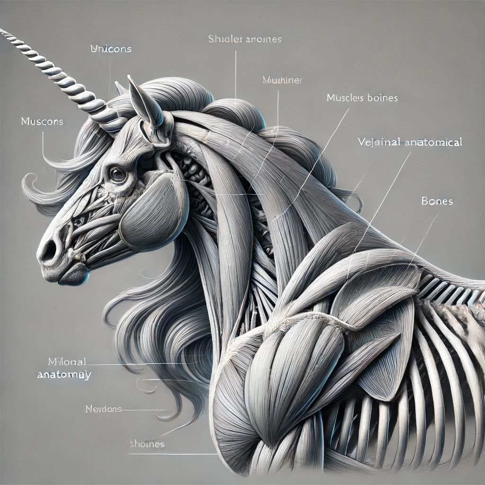

What is a Unicorn?
Unicorns are mythical creatures depicted as horses with a single, spiraling horn on their foreheads. Known for their pure white coats, unicorns symbolize purity, grace, and magical powers such as healing and neutralizing poison. Legends often state that only those who are pure of heart can interact with these majestic beings. The anatomy of a unicorn, a mythical creature from folklore and literature, combines equine and fantastical elements. Traditionally described as horse-like with a single spiraled horn, or alicorn, unicorns possess unique anatomical features. The alicorn, made of a keratin-like substance, is believed to have magical properties such as purifying water and healing ailments. It is structurally integrated into the unicorn's skull, supported by a robust cranial base.
Young unicorns do not possess their iconic horns at birth. Instead, they must embark on a quest or series of trials to earn and grow their horns. These quests are designed to test the unicorn's purity, courage, and wisdom. During their journey, unicorns may face challenges that require them to demonstrate kindness, empathy, and resilience.
Unicorns have a powerful build similar to horses, with well-developed limbs and a strong neck. Their efficient cardiovascular and respiratory systems enable swift, enduring movement. Their skin is often depicted as smooth and radiant, possibly serving as camouflage or protection.
